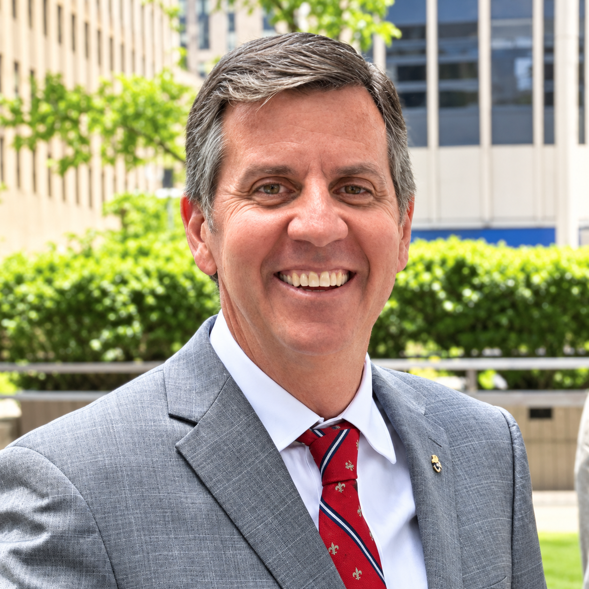

A combat veteran and retired Colonel in the U.S. Army Reserve, Sullivan has built a career centered on service to his country. Beyond his military background, he works as a small business owner and an investment advisor.
The main issues facing Rockaway are resiliency, infrastructure, health care, and education.
Sullivan is not a climate change denier. Like many in the Rockaway community, he lived through Superstorm Sandy, and even before he was a candidate running for office, he took part in many of the efforts to help rebuild resiliency, planting dune grass, and taking part in beach cleanups. He believes in green initiatives and drives an electric car. .
Sullivan is a big proponent of improving Rockaway’s transit infrastructure, including improving roads and public transportation. As a former military officer, he says he knows the importance of a community’s mobility.
Sullivan is a vocal supporter of Rockaway’s pursuit of securing a Level 1 Trauma Center to provide critical care and faster response times.
As for education, Sullivan has a Masters in Military Strategic Studies from the United States Army War College and an MBA from Mount Saint Mary’s University, where he taught as an assistant professor of military science for the ROTC Program. He believes in and will fight for empowering parents and students by prioritizing safety and high standards in our local schools.